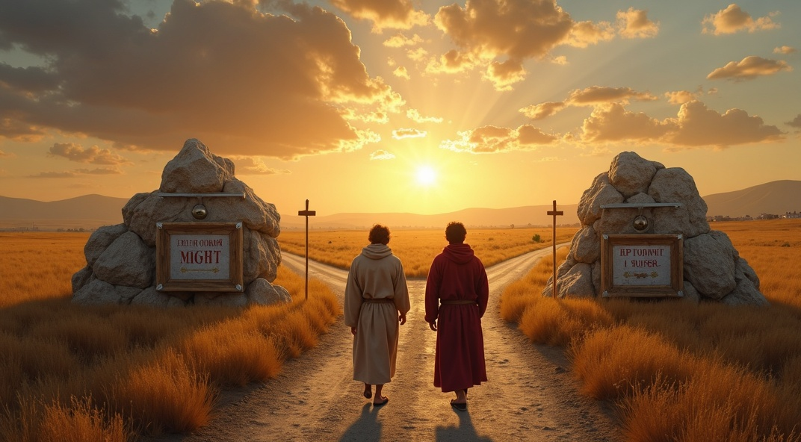
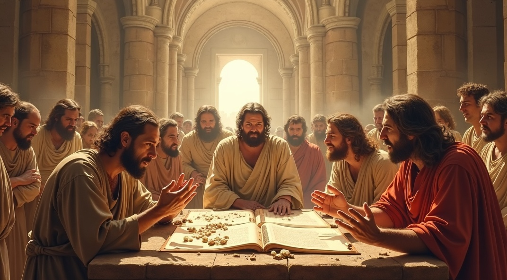
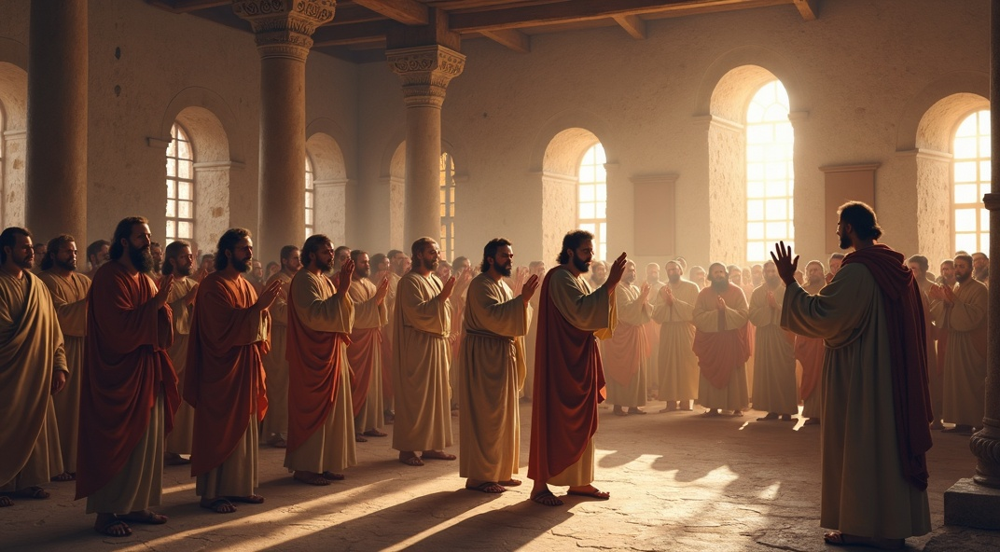
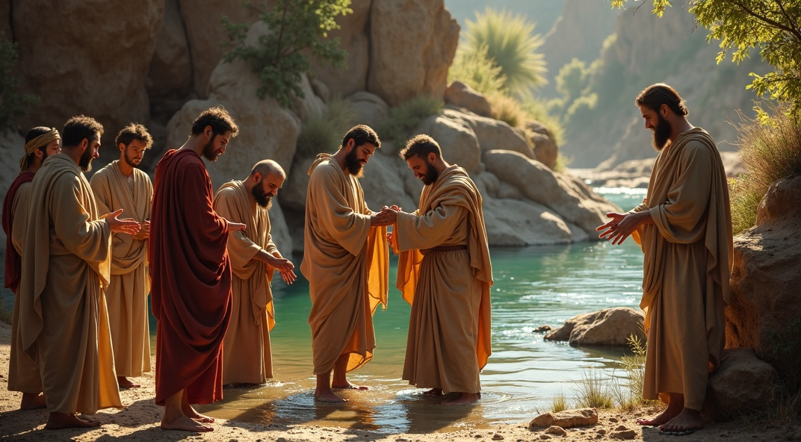

Who are God's Chosen People?

Summary
Who Is God’s Chosen People? A Fresh Look at Election
Who really are God’s chosen people? Is it still ethnic Israel, the Church, or both? This question has sparked countless debates—and it lies at the heart of understanding biblical salvation history. In this timely and theologically rich article, we explore how the Bible defines “election” and what it means to be part of God’s covenant people in light of both Old and New Testament teachings.
The Big Idea
The central argument is this: the Church—made up of both Jews and Gentiles who believe in Christ—is the true heir of God’s covenant with Abraham. It is the unified, multi-ethnic family of faith that embodies the promises, mission, and holiness originally entrusted to Israel.
Scripture as the Foundation
The article opens by revisiting the story of Isaac and Ishmael, showing how Paul interprets it in Galatians 4 as a vivid picture of two covenants. One, rooted in law and bondage. The other, grounded in promise and fulfilled in Christ. This New Covenant redefines God’s people not by ethnicity or ritual, but by faith empowered through the Spirit. Galatians 3 then takes center stage: “If you belong to Christ, then you are Abraham’s seed, and heirs according to the promise.” This means that believers—regardless of background—are part of God’s elect people.
What About Israel?
Far from canceling Israel, Romans 11 affirms that God has not abandoned His promises. A faithful remnant remains, and Gentile believers are “grafted in.” In the end, God’s redemptive plan converges in a future where “all Israel will be saved”—not by replacing Israel, but by fulfilling the promise through Christ.
Baptism and Belonging
Baptism is the visible sign of entry into this covenant community. It is not a work that earns salvation, but a faith-filled response that expresses union with Christ and entrance into the new creation.
Dispensationalism Reconsidered
One major critique raised is against dispensationalism. Especially its sharp division between Israel and the Church and the doctrine of a pre-tribulation rapture. The article argues that such views don’t align with the integrated, covenantal vision of Scripture.
Who Are “the Elect” in the End Times?
In passages like Matthew 24, “the elect” refers not to a separate future group but to the entire covenant community—the Church. This understanding is reinforced by the consistent use of eschatological language across the New Testament.
Final Takeaway
God’s chosen people are not defined by bloodline, but by faith. The New Testament reveals the Church as the one people of God—called to unity, holiness, and global mission. The Church doesn’t replace Israel but brings Israel’s calling to its fulfillment in Christ, becoming the very people through whom God blesses the nations.
Full Article
Who are God's Chosen People?
The doctrine of election plays a vital role in understanding the broader theology of salvation. Closely linked to the idea of predestination, both concepts raise significant questions about the nature of God’s sovereign purpose. At the heart of the discussion lies a key issue. When the New Testament speaks of predestination, is it referring to God’s choosing of the Church as a collective body, or of individual believers in a personal sense? How one answers that question shapes much of how one approaches soteriology and divine initiative in the plan of redemption.
One of the most frequently debated questions in biblical theology concerns the identity of God’s people. Has God chosen Israel, the Church, or both? Has Israel been permanently set aside, having been replaced by the Church? Or is it more accurate to see Jewish believers as part of the Church, sharing equally in the promises fulfilled in Christ?
These questions touch on deep themes of continuity and discontinuity between the covenants and call for careful reflection on key passages like Romans 9-11 and Ephesians 2. What becomes clear throughout the New Testament is that salvation comes through faith and obedience in Jesus the Messiah. Whether for Jew or Gentile, all who are born again in Christ are heirs of God’s promises.
This article will explore how the New Testament affirms both God’s sovereign initiative in calling His people and the universal scope of His saving grace. Also, it will demonstrate that the Church is the multi-ethnic family of Abraham, the one, unified community of God’s elect. As such, the Church is called to embody the unity, holiness, and redemptive mission for which Israel was originally chosen. In this way, the Church, comprising both Jewish and Gentile believers, becomes the context in which God’s people ultimately fulfill their original purpose as heirs to the promises given to Abraham. In so doing, it aims to offer a more integrated and compelling vision of God’s people.
In particular, this study will examine the identity of “the elect” in prominent eschatological texts such as Matthew 24, arguing that these references point not to a divided people of God, but to the unified Church—Jew and Gentile together—as the true heirs of the covenant promises.

Biblical Foundations
The Children of the Flesh vs. the Children of the Promise
In Genesis 21, the narrative of Isaac’s birth introduces a conflict with enduring theological significance. The tension between Sarai and Hagar, often read merely as a familial dispute, reflects a deeper cosmic struggle that echoes the enmity first introduced in Genesis 3 between the seed of the woman and the serpent. Here, the son of the slave woman is portrayed as mocking the son of promise, a detail the Apostle Paul later interprets with profound covenantal implications.
In Galatians 4:21-30, Paul expands upon this episode and frames it as a typological allegory. He distinguishes between two covenants, associating Ishmael with natural descent and bondage, and Isaac with divine promise and freedom:
“Which things are an allegory: for these are the two covenants; the one from the mount Sinai, which gendereth to bondage, which is Agar."
- Galatians 4:24
Paul’s use of allegory here is not a dismissal of historical reality but a theological exposition. He presents Hagar and Sarah as representative figures, who embody the old covenant given at Sinai and the new covenant of grace, respectively.
Paul’s citation in Galatians 4:24 clarifies that Hagar and Sarah function as an allegory, not in the sense of abstract symbolism divorced from historical reality, but as divinely intended typological figures within redemptive history. The women and their sons represent two covenantal frameworks: one rooted in Sinai and mediated through Moses (Exodus 19), and the other rooted in promise and fulfilled in the New Covenant.
The contrast between the two covenants is foundational to Paul’s argument: the Sinai covenant, given to the people of God who came out of Egypt, produced a system that, while revelatory and holy, ultimately led to bondage when abstracted from faith (cf. Rom. 7:6-13). In contrast, the New Covenant, first foretold in Jeremiah (31:31-34), finds its inauguration in Jesus’ declaration at the Last Supper, where He identifies His sacrificial death as the ratifying act of the promised covenant. This covenant does not merely renew the old but transcends it, internalizing the law and offering Spirit-empowered transformation (cf. Heb. 8:6-13; 2 Cor. 3:6-11).
“This cup is the new covenant in My blood, which is shed for you.”
– Luke 20:22
The New Covenant does not abolish the Law but transforms its function and location. This language signals God's intent to move beyond external covenantal administration toward a more intimate, Spirit-wrought relationship. One in which His law would be inscribed not on tablets of stone, but on the hearts of His people. As prophesied in Jeremiah 31:33, “I will put My law in their minds and write it on their hearts; and I will be their God, and they shall be My people.” This theological pivot must not be overlooked. Paul’s typological reading in Galatians 4 presents the Mosaic covenant given at Sinai as analogous to Hagar and Ishmael—temporary, preparatory, and ultimately to be cast out once the covenant of promise has come to maturity in Christ.
Following the birth of Isaac, the tension within Abraham’s household becomes theologically loaded and narratively unavoidable. The son born according to the flesh cannot coexist peacefully with the son born through promise. This echoes the pattern first seen in the Cain and Abel narrative, where the carnal impulse inevitably revolts against the spiritual. Sarah had already sensed the threat, having been treated with disdain by Hagar (Genesis 16:5), and her concern is vindicated when Ishmael mocks Isaac, the son in whom God’s covenant would be fulfilled (Genesis 21:9).
The narrative trajectory and Paul’s interpretation of it confirm that, for the sake of the promised seed’s preservation and distinction, separation from Abraham’s household was not only necessary but theologically significant.
This pattern is not confined to Abraham’s household; it reverberates throughout redemptive history. From the earliest pages of Scripture, we see the enmity between the seed of the serpent and the seed of the woman beginning to unfold. Cain, driven by jealousy, could not bear the righteousness of Abel, whose offering had been accepted by God. In like manner, the natural man, still bound to the flesh and resistant to the things of God, instinctively rises against the spiritual man. Paul underscores this pattern in Galatians 4:29: “He who was born according to the flesh persecuted him who was born according to the Spirit.”
The world does not merely resist what it cannot understand; it often resents what exposes its darkness. Life shaped by the Spirit, marked by surrender, humility, and holiness, functions as a silent but unmistakable indictment of the flesh-driven life. When the spiritual and the carnal come into conflict, peaceful coexistence proves impossible. Scripture and history consistently reveal the same outcome: the flesh will seek to silence the Spirit.

The Problem in Galatia
The epistle was addressed to the churches in the Galatian region of Asia Minor, Antioch, Derbe, Lystra, and Iconium. These congregations were founded during Paul and Barnabas’s first missionary journey (Acts 13–14), composed of both Jewish and Gentile believers.
One of Paul’s ongoing struggles was confronting the attempts of certain Jewish converts to impose Mosaic customs and rituals upon Gentile believers, a distortion he boldly identifies as “another gospel” (Gal. 1:6-10). Here, Paul speaks of “another gospel” being preached. The main issue was the division between Jews and Gentiles.1
Paul recounts his public confrontation of Peter (Gal. 2:11-14), exposing the disjunction between Peter’s behavior and the truth of the gospel. The pointed rhetorical question—“Why do you compel the Gentiles to live like Jews?”—reveals a core feature of the ‘other gospel’ infiltrating the church: namely, the reassertion of Jewish covenantal boundary markers, particularly the demand for ethnic separation, as criteria for full participation in the eschatological people of God.
This distortion stands in stark contrast to the apostolic consensus articulated at the Jerusalem Council (Acts 15:7-11) and is directly opposed to the Pauline affirmation that Christ has abolished the dividing wall between Jew and Gentile, creating ‘one new man’ through the cross (Eph. 2:14-16).2

Election and Entrance into the Kingdom by Faith
Paul intensifies his argument in Galatians 3:1-5 by drawing a stark contrast between life in the Spirit and life under the Mosaic Law. His rhetorical approach is piercing and pastoral, interrogating the Galatians with a series of pointed questions that expose the theological absurdity of returning to law-keeping after receiving the Spirit by faith. The thrust of the argument hinges on a fundamental soteriological premise: the Spirit is received not by works of the Law, but by hearing with faith the Gospel (v. 2).
Thus, life in the Spirit—i.e., participation in the blessings of the New Covenant promised by the prophets—is inaugurated solely through active faith by being born again as a covenant-signature with Christ the author and administrator (cf. Gal. 3:1; Isa. 32:15; Ezek. 36:26-27).3
“Know ye therefore that they which are of faith, the same are the children of Abraham.”
– Galatians 3:7
This is a major revelation of Christian identity: the born-again believer is a child of Abraham through the promise given in Genesis 12:3. The Church is the fulfillment of this promise. The Gospel of Jesus Christ, the new birth, and faith are the only way to fulfill it: “And the scripture, foreseeing that God would justify the heathen through faith, preached before the gospel unto Abraham, saying, In thee shall all nations be blessed” (Gal. 3:8). The blessing of Abraham was not merely material or national, but eschatological and universal, prefiguring the inclusion of the Gentiles in the covenant promises through the Gospel.
Paul then turns to the patriarch Abraham as the prototypical model of justifying faith, thereby situating his gospel within the broader redemptive-historical framework established in Genesis. “Even so Abraham believed God, and it was reckoned to him as righteousness” (Gal. 3:6, citing Gen. 15:6). The theological significance of this citation lies in its demonstration that the principle of justification by faith precedes the giving of the Law by several centuries. This historical priority of faith nullifies the claim that Torah observance constitutes the basis for covenant inclusion.
The point Paul makes is clear: being part of God's promises to Abraham is not accomplished by physical descent or by adopting Jewish customs. It is by faith in Jesus Christ and obedience to His Gospel that we become children of God (Gal. 3:26-27).
From this foundation, Paul draws a profound theological inference in verse 7: “Therefore, know as it is those who are of faith who are the sons of Abraham.” The phrase hoi ek pisteōs (“those of faith”) is a covenantal designation, identifying Gentile believers as legitimate heirs of the Abrahamic promises, not through physical descent or ethnic privilege, but through the same kind of faith exhibited by Abraham himself. This, as Beale notes, is part of Paul’s broader strategy of demonstrating that the Church, composed of both Jew and Gentile, is the true eschatological Israel. God’s one people who fulfill the typological trajectory of the Old Testament.4
Paul invokes what might be called an “ascending‑genealogy hermeneutic,” tracing the elect community’s pedigree upstream past Sinai, Judah, and even the tribal lists of Torah to the prime patriarch himself. In Galatians 3:6‑9, 16‑18, Paul argues that because the Abrahamic promise predates, and thus governs, the Mosaic covenant, the true descendants of the promise are those who share Abraham’s faith, not merely his bloodline (cf. Rom 4:11‑17; 9:6‑8). By redefining lineage in Christological terms “if you are Christ’s, then you are Abraham’s seed” (Gal. 3:29), the Apostle elevates believers into the very family tree that “the one who began it” (ἀρχηγός, Heb 12:2) also inaugurated it.
This move does not erase Israel’s historical role (Rom. 11:1‑2) but rather universalizes election. The Church becomes a trans‑ethnic “chosen family” and “royal priesthood” (1 Pet. 2:9) precisely because it is grafted into Abraham’s covenant root (Rom. 11:17‑18). In this way, Paul stakes his claim that Christian identity rests on an upward, promise‑first lineage grounded in Abraham, fulfilled in Christ, and sealed by the Spirit, rather than on the downstream markers of Mosaic law or tribal affiliation.
The next verse deepens this argument. “And the Scripture, foreseeing that God would justify the Gentiles by faith, proclaimed the gospel beforehand to Abraham, saying, ‘In you shall all the nations be blessed” (Gal. 3:8; cf. Gen. 12:3). Here, Paul personifies Scripture, attributing to it a prophetic foresight that anticipates the global dimensions of the gospel. This “proleptic” reading of Genesis 12:3 reveals Paul's intertextual method: the Abrahamic promise finds its ultimate fulfillment not in a national or territorial entity, but in the worldwide ingathering of believers through the gospel of Christ (cf. Rom. 4:11-17).5
This tightly woven argument reaches its theological crescendo in Galatians 3:9: “So then those who are of faith are blessed with Abraham, the believer.” The conclusion is inescapable: the Abrahamic blessing—justification, covenant membership, and the Spirit—is bestowed upon all who believe, irrespective of ethnic identity or legal observance.
Paul’s climactic affirmation of the unity of both Jew and Gentile in Galatians 3:26, “For you are all sons of God through faith in Christ Jesus,” further clarifies the identity of the true covenant community. The children of Abraham are identical with the children of God, and both designations are realized by union with Christ through faith. Thus, the ecclesiological implication is clear: the Church, comprised of those born again, is the eschatological fulfillment of the Abrahamic promise, the elect and chosen people of God (cf. Gal. 4:28-29; Eph. 2:11-22).
While the New Testament clearly affirms the inclusion of Gentiles as full heirs to the promises of Abraham, it does not thereby nullify God’s covenantal faithfulness to ethnic Israel. As Paul argues in Romans 11, God has not rejected His people whom He foreknew (Rom. 11:1-2). Rather, there remains a faithful remnant within Israel, chosen by grace (Rom. 11:5). Paul’s metaphor of the olive tree (Rom. 11:17-24) underscores both continuity and expansion. Gentile believers are grafted in among the natural branches, sharing in the nourishing root of the patriarchal promises.
Thus, the future hope that “all Israel will be saved” (Rom. 11:26) points to a consummation in which God’s redemptive purposes for Israel and the nations converge in Christ. As George Eldon Ladd observes, “The Church does not replace Israel, but fulfills the destiny to which Israel was called.”6 Therefore, the Church as the multi-ethnic people of God stands as both the fulfillment and the continuation of God’s covenantal plan, awaiting the ultimate ingathering of all His elect.

Baptism and Faith
Baptism is scripturally normative for professing believers. It visibly signifies union with Christ in his death and resurrection. It is deeply woven into the theology of regeneration (Rom 6:3-4; 1 Pet 3:21). Although it does not displace faith, it is inherently indispensable. It is the visible sign of entering into the new covenant community, paralleling circumcision in the Old Testament (Col. 2:11-12).7
Baptism in the New Testament is closely tied to both the forgiveness of sins and incorporation into the eschatological people of God (Mark 16:16; Acts 2:38; 22:16; 19:4-5). As John the Baptist’s ministry anticipated the arrival of the Messiah, his baptism of repentance (Acts 13:24) functioned typologically, foreshadowing the greater baptism that would accompany the dawning of the new covenant. In this fuller expression, water baptism is no mere external rite, but a divinely ordained sign that points to internal cleansing (Ezekiel 36:25-27), union with the crucified and risen Christ (Rom 6:3-4), and participation in the Spirit's regenerative work (Titus 3:5).
Baptism, therefore, is not a substitute for faith but its outward sign—an act of obedience that publicly identifies the believer with Christ and the covenant community. As Blomberg notes, “Baptism is the visible entry into the people of God, but it is faith that unites one to Christ.”8 In the New Testament, baptism and faith are consistently linked (Acts 2:38, Gal. 3:26-27), with baptism serving as the visible marker of entry into the covenant community and faith as the essential means of union with Christ. As such, the Church is comprised of those who have responded in faith and demonstrated that faith through the waters of baptism, embodying the new covenant reality of a people regenerated and indwelt by the Spirit.
In Galatians 3:27, the Apostle strongly implies that those who live by faith in Christ have also entered that faith through baptism. Grammatically, Paul’s language presumes his audience has undergone this initiatory procedure: “For as many of you as were baptized into Christ have put on Christ.” The aorist tense (“were baptized”) marks baptism as a completed past event, while the metaphor “have put on Christ” indicates its enduring spiritual effect.
In Pauline theology, faith and baptism are not separate stages but integrated dimensions of union with Christ. While justification is by faith (cf. Gal. 2:16), baptism functions as the covenantal act that resurrects the believer into the body of Christ (cf. Rom. 6:3-5; 1 Cor. 12:13). Those who have genuinely responded to His “high calling” through faith demonstrate their new covenant identity by undergoing baptism. Baptism is not a mere ritual token, but a typological enactment of death and resurrection into new life.
As in Romans 6:3-5, baptism signifies union with Christ in his death and resurrection, marking the believer as a sanctified vessel (cf. 2 Tim 2:21), cleansed and prepared for the indwelling of the Spirit, in fulfillment of the promised eschatological renewal (Ezekiel 36:25-27). It is a Spirit-wrought response that signifies participation in the inaugurated new creation, where the temple of God is no longer made with hands, but is now embodied in those who walk by faith.
To be baptized into Christ is to be clothed with Him, a motif drawn from the rich biblical imagery of new identity (cf. Isa. 61:10; Rom. 13:14; Col. 3:10). In this imagery, baptism functions as the visible, covenantal “putting on” of Christ, signifying the believer’s transformation and full inclusion in the family of God. Thus, Paul can speak of baptism and faith as inseparably linked, both pointing to the believer’s new status in the New Covenant community.

Scripture v. System: Evaluating the Israel-Church Distinction
The development of Christian theology has often emerged in response to doctrinal challenges or perceived threats to orthodoxy. The history of the Church reveals that key doctrines, such as the Oneness of God, the deity of Christ, and justification by faith, were clarified and codified when false teaching arose, compelling the faithful to return to the Scriptures to establish the truth. This process is not merely academic; it is a pastoral necessity. Jesus himself stated, “You are mistaken, not knowing the Scriptures nor the power of God” (Matt 22:29, NKJV), pointing to the danger of spiritual error born from ignorance and the mishandling of divine revelation.
A noteworthy case of such theological innovation appears in the 19th-century teachings of John Nelson Darby, a founder of the Plymouth Brethren and a key architect of dispensational theology. Among his most influential novelties were the pre-tribulational rapture and the sharp separation between Israel and the Church. These were doctrines virtually unknown in Christian history prior to his work.9 Rather than arising from exegetical necessity or biblical theology, Darby’s framework appears to be a deductive construct built on theological assumptions rather than textual foundations. Such theological systems often arise not from the plain sense of Scripture but from a series of deductive moves, where conclusions precede exegesis, and the text is subsequently marshaled to fit a predetermined framework.
This theological trajectory reflects what modern scholars would term confirmation bias, the tendency to begin with a conclusion and then seek out evidence to support it while disregarding or minimizing contrary data. In Darby’s system, eschatological passages were interpreted in light of an already established narrative: namely, that God's purposes for national Israel and the Church must be distinct and mutually exclusive. Such reasoning departs from the biblical-theological method, which moves from exegesis to doctrine, not from system to Scripture. As Beale rightly notes in his critique of dispensational readings of Revelation, a failure to recognize symbolic or typological development can lead to a distorted theological picture that presses discontinuity where Scripture implies fulfillment and expansion.10
Furthermore, Darby’s method demonstrates what legal theorists call theological tunnel vision: a hermeneutical fixation on a desired outcome that interprets all evidence in its favor, often ignoring contrary biblical data. Key texts like Romans 11, Galatians 3, Ephesians 2, and 1 Peter 2 present strong theological continuity between believing Israel and the Church, the one people of God joined through faith in Christ.11 Blomberg, writing on eschatology and hermeneutics, warns that some interpretive systems risk bypassing the corporate, covenantal, and Christ-centered unity of God’s people by constructing artificial divisions unsupported by the text.12
In short, while theology is necessary to guard truth and articulate doctrine faithfully, it must always be driven by Scripture, not by speculative systems or reactionary frameworks. When theology begins with a premise and reshapes the biblical narrative to fit, it risks undermining the very authority it claims to uphold.
There was an eyewitness to the birth of the pre-tribulation rapture doctrine. Samuel P. Tregelles, an English biblical scholar and member of the Plymouth Brethren, stands as a significant figure in this history. One of his achievements was the critical edition of the Greek New Testament. Also notable for his careful documentation and critique of emerging eschatological views within his own circles. Tregelles observed firsthand the development and dissemination of the pre-tribulation rapture teaching, and he did not hesitate to challenge its scriptural foundations. In his seminal work, The Hope of Christ’s Second Coming, Tregelles argues that the notion of a secret, pre-tribulational rapture was a recent innovation, unknown to the church’s historic witness and unsupported by a plain reading of the New Testament.13
As Beale and Blomberg have shown, when doctrinal systems are allowed to override the typological and covenantal trajectory of Scripture, the result is often a forced discontinuity that obscures the fulfillment and expansion intended by the biblical authors.14 Tregelles’ critique remains prescient: the integrity of Christian theology depends on letting Scripture shape our systems, not vice versa. The Church, as the one multi-ethnic people of God, fulfills the promises to Abraham and embodies the unity for which Christ prayed (Jn. 17:20-23). To introduce new divisions—whether by eschatological speculation or by privileging system over Scripture—is to risk undermining the very foundation of Christian hope and identity.
Scriptural Counterevidence
The debate over the identity of “the elect” in eschatological discourse is deeply intertwined with the theological necessity—within pre-tribulation frameworks—to maintain a sharp distinction between Israel and the Church. This interpretive move is not merely a theoretical abstraction, but rather a functional requirement for the coherence of the pre-tribulation rapture system. However, a close reading of Matthew 24 reveals that Jesus situates the salvation and gathering of God’s elect squarely after the tribulation period.15
The narrative sequence in this pivotal chapter is unmistakable: “Immediately after the tribulation of those days…” (Matt. 24:29). Here, the eschatological markers—cosmic disturbances, the visible coming of the Son of Man, the gathering of the elect—are not isolated phenomena but are integrally linked, forming a consistent pattern echoed throughout the New Testament’s major eschatological texts. This textual patterning strongly challenges any artificial separation between Israel and the Church at this crucial juncture in redemptive history.
Seeing how obvious and direct these verses are, it follows that there must be a separation between Israel and the Church. The workaround is clever-if the Church is going to be raptured before the Tribulation-then there must be a separation or two stages to the second coming to accommodate Matthew 24:29-31, it takes a one-word description of this same gathering, described by Paul in 1 Thessalonians 4:17.
The Greek verb ἁρπάζω (harpazō), employed by Paul in 1 Thessalonians 4:17 to describe the "catching up" of believers, is best understood as a non-technical term whose meaning is shaped by its immediate context rather than by any fixed theological definition. This conclusion is supported by a careful lexical, exegetical, and theological analysis across the New Testament and is affirmed by leading scholars in the field.
As Beale notes, “the term harpazō is used broadly in the New Testament for sudden or forceful action, whether physical removal, rescue, or even visionary experience. Its function in 1 Thessalonians 4:17 is determined by the context of Christ’s parousia, not by any inherent technical sense”16 The verb appears in a variety of settings—such as the Spirit snatching Philip away (Acts 8:39), the evil one snatching away the word sown in the heart (Matthew 13:19), and Paul being caught up to the third heaven (2 Corinthians 12:2-4) none of which confer a specialized eschatological meaning upon the word itself.
Blomberg similarly observes, “Paul’s use of harpazō in 1 Thessalonians 4 is pastoral, designed to comfort grieving believers, and does not introduce a new technical term for a unique eschatological event. The word’s semantic range remains consistent with its general Greek usage, and its theological significance arises from the surrounding narrative, not from the word itself.”17
Robert Gundry, in his detailed treatment of rapture texts, underscores that “harpazō is never used as a technical term for a secret or pre-tribulational rapture elsewhere in the New Testament. Its application in 1 Thessalonians 4:17 is descriptive, not doctrinally prescriptive, and the notion of secrecy is absent both from the word and from Paul’s description of the event, which is accompanied by loud acclamation and the trumpet of God.”18
Grant Osborne concurs, emphasizing that “the verb harpazō, while dramatic, is not a technical term but a common Greek word for sudden removal. The focus in 1 Thessalonians 4 is on the certainty and power of God’s action, not on the secrecy or uniqueness of the event.”19
George Eldon Ladd, whose holistic eschatology has shaped much of modern evangelical thought, writes: “The language of ‘caught up’ does not establish a secret or separate rapture event. Rather, it reflects the apocalyptic expectation of God’s decisive intervention at the end of the age, consistent with Jewish and Christian apocalyptic literature.”20
In sum, the consensus among these scholars is clear: ἁρπάζω (harpazō) in 1 Thessalonians 4:17 is a non-technical term whose meaning is governed by its literary and theological context. It does not, by itself, establish a doctrine of a secret or pre-tribulational rapture, nor does its singular use in this context imply exclusivity or technicality. Rather, its significance is derived from the broader narrative of Christ’s return and the resurrection hope shared by all believers.
Conclusion
Throughout this study, we have seen that the New Testament consistently identifies the elect as the Church: the one, unified people of God, composed of both Jews and Gentiles who are in Christ. This community is not a replacement for Israel, nor a temporary “parenthesis” in God’s plan, but the fulfillment and continuation of the covenant people—heirs to the promises given to Abraham.
The doctrine of God’s chosen people stands at the very heart of redemptive history, for it delineates the scope of divine election—a purposeful and gracious act consistently attested throughout Scripture. As Beale and Blomberg emphasize, election is never a matter of arbitrary preference, but of God’s sovereign intent to create a people for Himself, grounded in Christ and extending beyond ethnic or cultural boundaries.
It is historically and theologically implausible to suggest that the New Testament writers—many of whom faced opposition from their own Jewish communities while welcoming Gentile believers—would restrict the designation “God’s chosen people” exclusively to ethnic Israel. Rather, the narrative trajectory of the New Testament reveals a remarkable expansion: all who are united to Jesus by faith, whether Jew or Gentile, are incorporated into the elect community. The Scriptures thus bear unified witness that the identity of God’s chosen is not defined by lineage or law, but by participation in the saving work of Christ, who fulfills and redefines election in Himself.
Accordingly, the references to ‘the elect’ in Matthew 24:22, 24, and 31 must be understood as designating the entire covenant community—the Church—comprising both Jews and Gentiles who are united in Christ. This identification is consistent with the New Testament’s redemptive-historical trajectory, in which the Church inherits the promises and calling once assigned to Israel.
This integrated vision of God’s elect people calls the Church to embody the unity, holiness, and redemptive mission for which it was chosen. In a world still marked by division and hostility, the Church is summoned to bear witness to the reconciling power of the gospel—a community where all barriers are broken down in Christ. In this way, the Church fulfills its vocation as the true family of Abraham, heirs of the promise, and agents of God’s blessing to the nations.